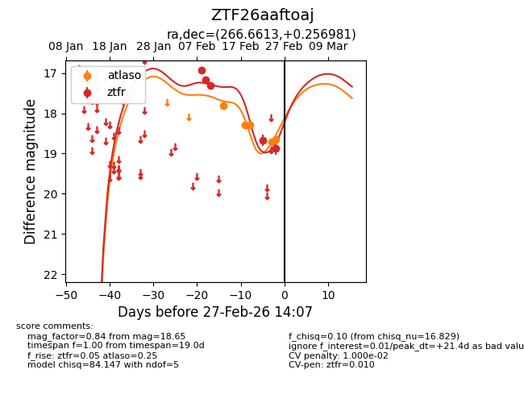
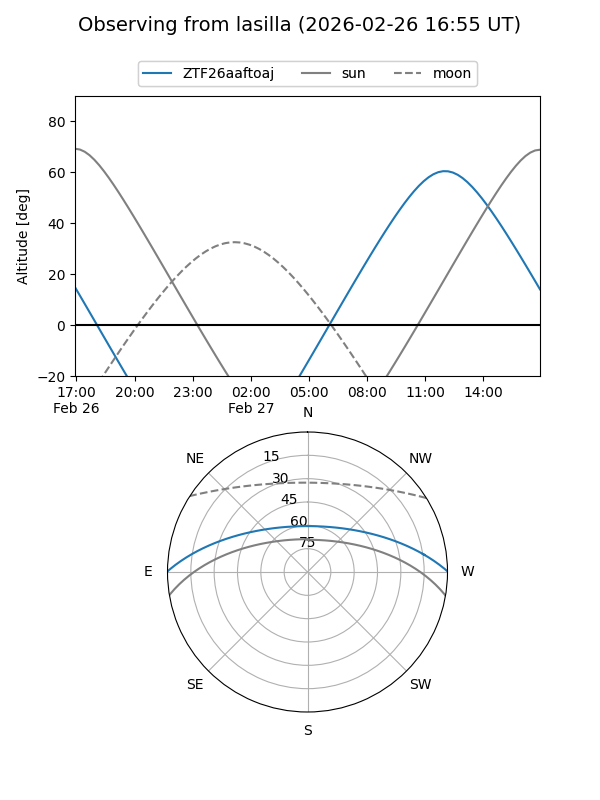
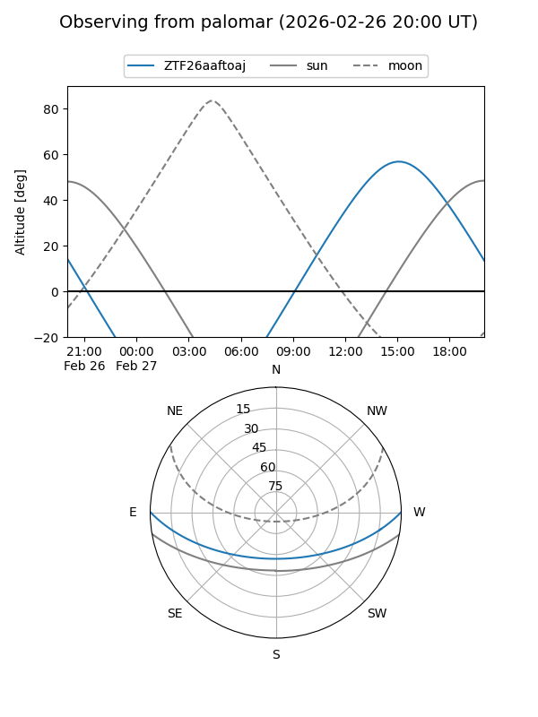
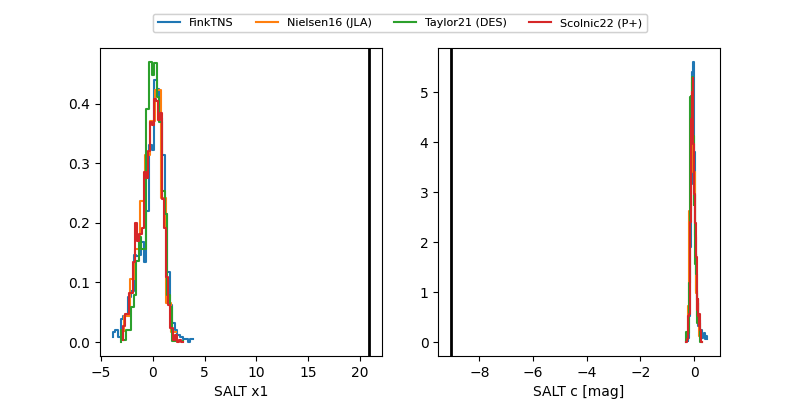

ZTF26aaftoaj
Target ZTF26aaftoaj at 2026-02-27 14:08
Aliases and brokers:
FINK: link
Lasair: link
ALeRCE: link
alt names
ZTF26aaftoaj (ztf,fink_ztf)
Coordinates:
equatorial (ra, dec) = 266.6613,+0.25698
equatorial (HMS+DMS) = 17:46:38.71,+00:15:25.13
galactic (l, b) = (25.6206,+14.49611)
Flags:
likely cv
Photometry:
last atlaso=18.65, ztfr=18.88
5 atlaso, 5 ztfr detections
Lightcurve

Visibility


Additional plots
